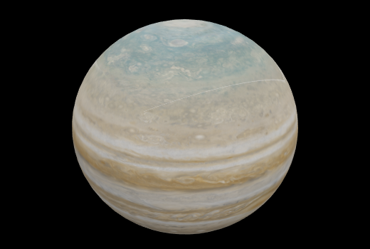

Planeta Jupiter
Se trata del primero de los planetas exteriores, también conocidos como planetas gaseosos. Es el mayor planeta y el segundo mayor cuerpo celeste del sistema solar.
Júpiter es el planeta más grande de nuestro sistema solar. Es parecido a una estrella, pero nunca llegó a ser lo suficientemente grande como para empezar a arder. Está cubierto de rayas de nubes arremolinadas. Tiene fuertes tormentas como la Gran Mancha Roja, que hace cientos de años que dura. Júpiter es un gigante hecho de gas, y no tiene una superficie sólida, pero puede tener un núcleo interno sólido de aproximadamente el tamaño de la Tierra. Júpiter también tiene anillos, pero son demasiado tenues para verlos muy bien.
Estructura y superficie
Es el planeta más grande de nuestro sistema solar.
Es un gigante hecho de gas: sobre todo de hidrógeno y helio.
Tiene una atmósfera muy densa.
Tiene anillos, pero son muy difíciles de ver.
El tiempo en Júpiter
Un día dura solo 10 horas.
Un año equivale a 11,8 años en la Tierra.
Sus vecinos
Tiene 79 lunas confirmadas.
Es el quinto planeta contando desde el Sol, así que tiene a Marte y a Saturno por vecinos.
